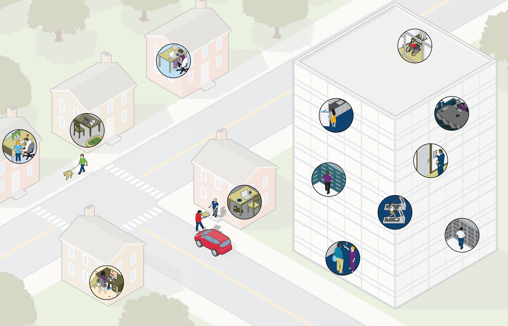

L’avenir du travail : Ce que nous avons appris et ce qui nous attend
Outre la pandémie, il y a d’autres facteurs qui auront une influence sur l’avenir du travail. L’atténuation des risques et des attentes en matière d’environnement, de société et de gouvernance (ESG) et des risques liés à la chaîne d’approvisionnement, et d’autres facteurs organisationnels et sociaux comme les initiatives liées à la diversité, à l’équité et à l’inclusion ainsi que le vieillissement de la main-d’œuvre joueront tous un rôle dans la vision des employeurs.
L’idée de la reprise devrait donc se poursuivre bien après la pandémie. Alors que le monde continue de composer avec les défis continus liés à la COVID-19, l’expression que beaucoup entendent depuis un certain temps, « la nouvelle normalité », commence à prendre
forme. Comme beaucoup de choses demeurent incertaines, une pratique exemplaire recommandée consiste à être prêt à s’adapter, à apprendre des autres, à communiquer efficacement et souvent, et à mettre la gestion du changement à l’avant-plan de
chaque stratégie.
Des changements sont à venir, mais avec une vision, une planification et des mesures de premier plan les entreprises pourront non seulement gérer ces changements, mais aussi en tirer parti pour s’épanouir. Pour faire suite à notre point de vue antérieur sur une nouvelle vision du milieu de travail, nous examinons ce que les entreprises ont appris et comment elles appliquent ces leçons.
La pandémie de COVID-19 qui persiste a fondamentalement changé la façon dont de nombreuses entreprises abordent des aspects essentiels de leurs activités et la gestion de la continuité des activités. Aujourd’hui, bon nombre d’entreprises ont une nouvelle vision du milieu de travail, qu’il s’agisse du rôle de l’employeur dans le mieux-être des employés ou de la nouvelle définition du milieu de travail; ce n’est plus seulement le bureau.
Choisissez les zones en surbrillance pour en savoir plus


Les modèles d’exploitation flexibles, agiles et axés sur les résultats permettent aux entreprises de se distinguer. En intégrant l’agilité et la formation d’équipes interfonctionnelles aux modèles et aux processus, les entreprises tirent davantage de valeur de leur personnel et de leurs structures.
Opérations

Il est essentiel d’effectuer une analyse des lacunes pour que les dirigeants des opérations cernent les faiblesses de leur gestion de la continuité des activités et de leurs stratégies d’affaires générales. Par exemple, de nombreuses entreprises réalisent qu’elles aimeraient automatiser davantage de processus afin de maintenir la continuité et réduire l’incidence du risque, mais qu’elles n’ont pas le savoir-faire numérique nécessaire pour apporter un changement opérationnel aussi important. Une analyse des lacunes peut aider à comprendre les priorités pour apporter des changements opérationnels significatifs.
Opérations


Les RH se concentrent aussi sur la façon de modifier les approches traditionnelles en matière de talents. Pour ce faire, les dirigeants des RH évaluent les nouvelles préférences de la main-d’œuvre et réorganisent les emplois et les structures de façon à favoriser le travail virtuel. Nombre d’entre eux étudient comment guider les gestionnaires et leur donner de nouvelles compétences en matière de gestion dans un environnement à distance.
Ressources humaines

La stratégie de continuité des activités est aussi une priorité pour les RH, qui doivent comprendre comment outiller les employés pour que ceux-ci puissent réagir rapidement au changement et mettre en place des processus et des structures de ressources humaines qui appuient les plans globaux de gestion de la continuité des activités de l’entreprise.
Ressources humaines

Dans l’ensemble, les variables en matière d’embauche changent. Alors que les entreprises se tournent vers le travail à distance et que la concurrence s’intensifie, les entreprises recherchent plus sérieusement des personnes motivées et capables de travailler en équipe, qui savent s’adapter facilement au changement. Traditionnellement, la rémunération était un facteur de motivation majeur pour les nouveaux employés, mais les entreprises cherchent maintenant à mettre l’accent sur les employés qui sont motivés par les résultats.
Talent

Talent
Les entreprises ont des talents internes qui possèdent des connaissances institutionnelles et une expertise, mais la façon d’accomplir le travail change. Avec notre infrastructure de travail virtuelle et automatisée, les entreprises doivent veiller à ce que leurs talents actuels puissent appliquer leurs connaissances et leurs compétences de nouvelles façons. L’une des principales priorités en matière de talents devrait être de créer un accélérateur pour permettre aux talents actuels de s’épanouir dans un environnement de travail et un mode opérationnel différents.

Les entreprises comprennent que même si les investissements technologiques sont précieux, les TI doivent aussi veiller à ce que les personnes utilisent efficacement la technologie. Ainsi, les TI jouent désormais un rôle plus important dans la gestion de la culture et du changement. Cela est particulièrement important alors que les entreprises déploient de nouveaux outils de collaboration et de nouvelles plateformes libre-service.
Technologie de l'information

Technologie de l'information
La gestion de la continuité des activités dépend maintenant davantage de l’infonuagique que des plateformes sur place, ce qui signifie que les entreprises doivent réfléchir aux questions de cybersécurité, y compris l’accès à partir de différents appareils et d’emplacements à distance.
De nombreuses entreprises passent à un système à bureaux flexibles plutôt que d’offrir des bureaux ou espaces permanents dans leurs immeubles, car les gens sont susceptibles de se présenter au bureau moins souvent. Ceux qui cherchent à sous-louer leurs bureaux pourraient trouver cela difficile compte tenu de l’excédent actuel du marché.
Immobilier


De plus en plus d’entreprises réalisent que les examens réguliers de la résilience des fournisseurs, ainsi qu’une gestion et un contrôle accrus, sont essentiels à la stratégie à long terme. Les dirigeants d’entreprise doivent savoir si un fournisseur donné peut les aider à développer continuellement leurs capacités et leur portée, au lieu d’adopter une approche où l’on ne pense plus aux ressources une fois qu’elles ont été mises en place. De plus, il faut déterminer si l’interruption du service ou la perturbation du service d’un fournisseur deviendra un problème pour l’organisation.
Résilience des fournisseurs
Désormais, les exigences de continuité des activités et de reprise après sinistre des TI sont intégrées aux ententes-cadres de service, de façon à ce que les fournisseurs aient une plus grande responsabilité et que les entreprises obtiennent la transparence dont elles ont besoin.
Résilience des fournisseurs

Ce que les employés attendent de leur employeur a changé, en grande partie en raison de la pandémie et d’autres facteurs, y compris l’accent mis sur la diversité, l’équité et l’inclusion ainsi que les initiatives sociales. Les employés d’aujourd’hui recherchent une flexibilité leur permettant d’accomplir le travail quand cela leur convient, au lieu de travailler selon l’horaire traditionnel
de 9 h à 17 h – et ils apprécient l’option de pouvoir travailler où ils veulent. Cela s’inscrit dans une approche globale axée sur le bien-être; pour offrir un rendement optimal, de nombreux employés reconnaissent qu’ils doivent également prendre soin de leur bien-être et comptent sur leur employeur pour leur fournir des ressources et du soutien. Ils veulent également des communications plus cohérentes, claires et transparentes de la part de leur employeur.
Talent

Les entreprises intègrent les données et les analyses dans de multiples secteurs de leurs activités, y compris les ressources humaines. Le passage à une prise de décision davantage axée sur les données contribue à façonner des points de vue plus précis et à aligner les dirigeants sur une vision cohérente. Les dirigeants des RH sont également mieux à même de cerner les secteurs de risque et les stratégies d’atténuation grâce à des données plus nombreuses et de meilleure qualité.
Ressources humaines


Back to top
